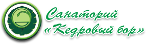
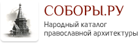
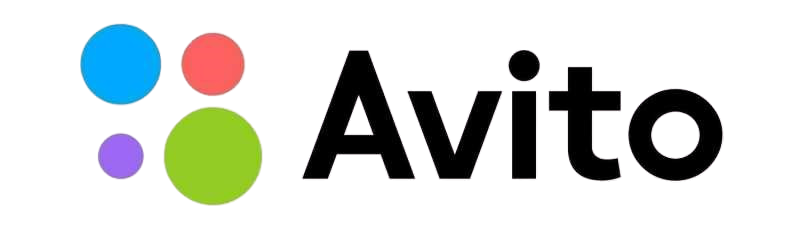

О деревне
Подъя́ково - деревня в составе Щегловского сельского поселения Кемеровского района Кемеровской области - Кузбасса. Находится на правом берегу реки Томь вблизи Старой Балахонки, Подонино и посёлка Известковый. Постоянное население деревни по данным переписи 2010г составляет 193 чел. На данный момент в деревне насчитывается 7 улиц и 3 реки (Большая Подикова, Малая Подикова и Томь).
Немного истории
Деревня основана в XVIII в. крестьянами из Европейской России Подъяковыми, по фамилии которых и названа. Фамилия Подъяковы образована от древнерусского слова ПОДЪЯК - "помощник дьякона".
До 1917 г. деревня входила в состав Алексеевской волости Кузнецкого уезда Томской губернии. Среди основателей деревни были такие крестьяне как Терёхины и Пашины. Иногда в XVIII-XIX вв. деревею называли Терехина, Пашина, но сейчас эти названия забыты.
В июле 1962 года в деревне Подъяково состоялся VIII Всероссийский слет юных туристов, в котором приняли участие 350 человек из разных уголков Советского Союза.
Полезные ссылки
Санаторий "Кедровый бор", находящийся в деревне, является одним из лучших в Кузбассе. Климатические ресурсы санатория имеют достаточный потенциал для организации круглогодичной климатотерапии. На территории находится озеро, которое является прекрасным местом для летнего и зимнего отдыха.
Также в деревне находится часовня Казанской иконы Божией Матери и летний лагерь Кемеровского университета.
На данный момент в Подъяково ходят такие автобусы как №161у, №161Э, №186, №540, №559. Их рассписание вы можете уточнить на GoOnBus.ru.
Благодаря Авито вы можете взглянуть на активные объявления (например, земельных участков) в Подъяково.
